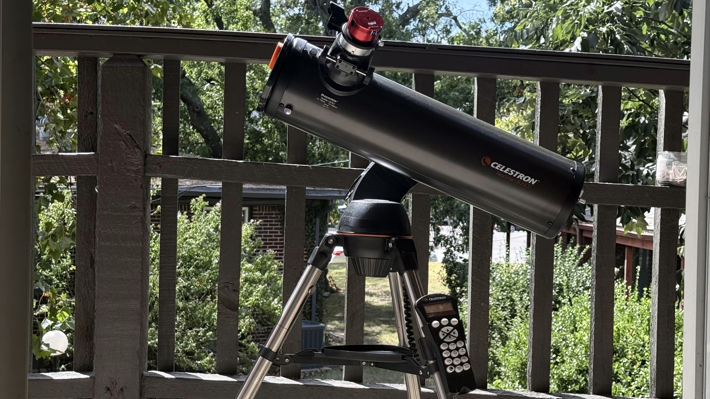
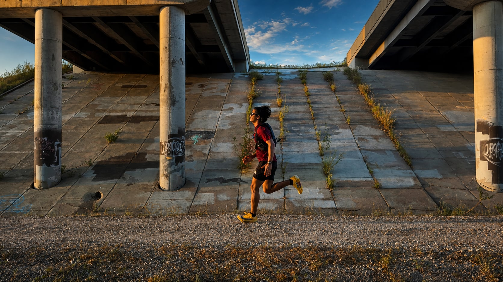

A bit about me
Engineer by training, problem-solver by nature.


I'm Dhan Prasad Pradhan, a Mechanical Engineer specializing in mechanical design, CAD modelling, and robotics & mechatronics. I'm currently completing my MS in Mechanical Engineering, graduating Fall 2026.
I enjoy working on projects that require both analytical rigor and creative thinking — from CAD models and FEA simulations to physical prototypes and robotic systems.
Beyond the lab and workshop, I explore programming and automation, and how software tools can enhance engineering workflows. I believe great engineers never stop learning — so I write about everything I figure out.
Based in Nepal. Open to collaborations, internships, and interesting engineering challenges.
What I do with the rest of my time
Three things that keep me steady when the engineering isn't going well.
Astronomy
optics · patienceAmateur astronomy turned out to be an engineering problem wearing a hobby's clothes — aligning optics, tracking against the Earth's rotation, and coaxing a usable image out of a lot of imperfect ones.
Most nights produce nothing worth keeping. The ones that do make up for it entirely.
See the gallery →
Philosophy
currently readingI read philosophy for the same reason I like difficult design problems: the good ones argue with you rather than reassure you. Nietzsche, Schopenhauer and Osho are the three I keep returning to, and they disagree with each other enough to keep the reading honest.
Schopenhauer's argument in The Wisdom of Life is that what a person is matters more than what they own or how they are regarded — that the only resources which hold up under pressure are internal ones. Nietzsche pushes in a harder direction: don't inherit your values, build them, and treat difficulty as the material you are made from rather than an interruption to it. Osho's contribution, in The Joy of Living Dangerously, is the reminder that safety has a cost of its own — that a life arranged entirely around avoiding risk quietly stops being lived.
I don't accept any of them wholesale, and I think you'd have to ignore a fair amount to do so. But the common thread — that a person is responsible for building their own centre rather than borrowing one — is the idea I've found most useful, and it shows up more in how I choose problems than in anything I'd say out loud.
Running
most morningsRunning is where I do my least complicated thinking. It asks nothing clever of me — just that I show up again the next morning, which turns out to be the harder part.
Over the last three months it has added up to a little over 400 kilometres. I keep the records mostly because watching a number grow is its own quiet motivation.
See the full log →